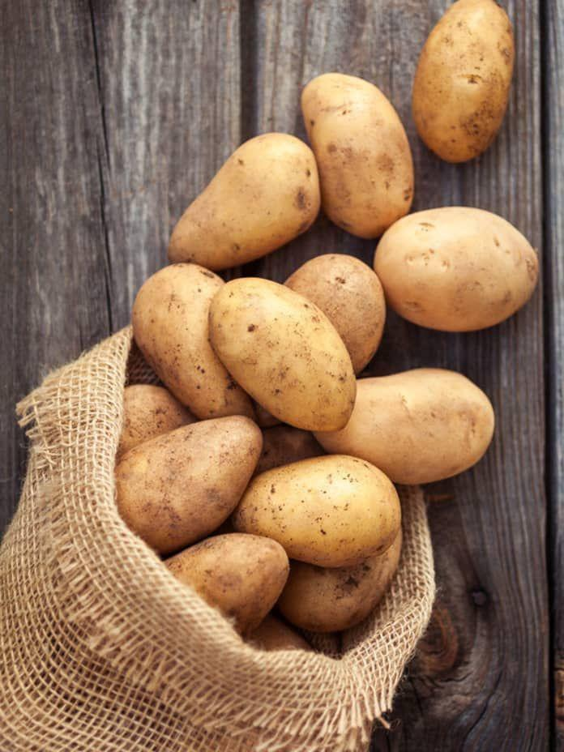

Batata
🌱 Como cultivar
Plante pedaços do tubérculo com “olhos” (brotos) em solo fofo e rico em matéria orgânica. Conforme crescerem, cubra os caules com terra para proteger os tubérculos.
🍽️ Receitas
💡 Curiosidade
A batata foi o primeiro vegetal cultivado no espaço! Os astronautas precisavam de alimentos nutritivos que crescessem em gravidade zero.